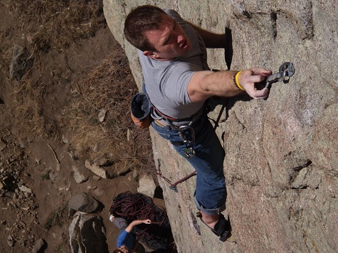
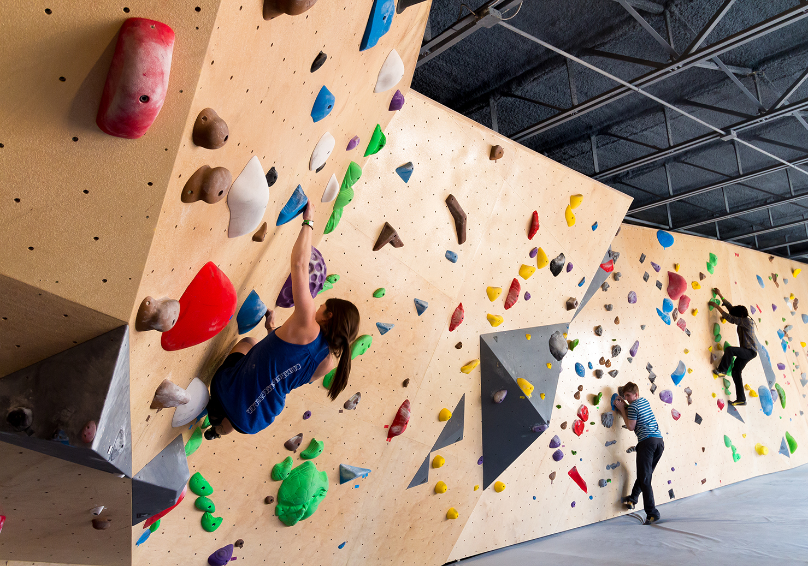
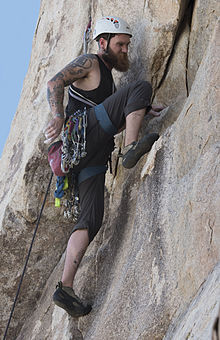

Top-rope climbing (or Top-roping) is a style in climbing in which a rope, used for the climber’s safety, runs from a belayer
at the foot of a route through one or more carabiners connected to an anchor system at the top of the route and back down to the climber,
1 usually attaching to the climber by means of a harness. Assuming that the route is predominantly bottom-to-top; that the anchor holds;
and that the belayer pays attention, the top-rope climber generally will not fall more than a short distance and can thus safely attempt
even the most difficult routes. Most top-rope anchors can be reached through non-technical means, such as by hiking or scrambling to the top of the cliff.
Top-roping is often done on routes that cannot be lead climbed for one reason or another. It is the most common style used at indoor
climbing walls and is also used in situations where other methods would be unsafe or environmentally damaging.
Top rope climbing is very useful in teaching beginner to intermediate level.
Sport Climbing

Sport climbing is a form of rock climbing that relies on permanent anchors fixed to the rock, and possibly bolts, for protection,
(in contrast with traditional climbing, where the rock is typically devoid of fixed anchors and bolts, and where climbers must
place removable protection as they climb). Since the need to place protection is virtually eliminated, sport climbing places an emphasis on gymnastic-like ability, strength, and endurance
– as opposed to the adventure, risk and self-sufficiency which characterize traditional climbing. Since artificial means are used primarily
for safety rather than to make upward progress, sport climbing is considered a form of free climbing.
Bouldering

Bouldering is a style of rock climbing undertaken without a rope and normally limited to very short climbs over a crash pad (called a bouldering mat)
so that a fall will not result in serious injury. It is typically practiced on large natural boulders or artificial boulders in gyms and outdoor urban areas.
However, it may also be practiced at the base of larger rock faces.
Traditional Climbing

Traditional climbing, or Trad climbing, is a type of rock climbing in which a climber or group of climbers places all gear
required to protect against falls (pitons, etc.), and removes it when a passage is complete.
Before the advent of sport climbing in the United States in the 1980s, and perhaps somewhat earlier in parts of Europe,
the usual style of unaided rock climbing was what is now referred to as "traditional". In trad climbing,
a leader ascends a section of rock placing his or her own protective devices while climbing.